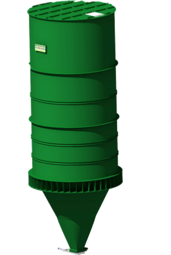
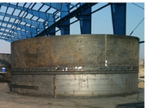
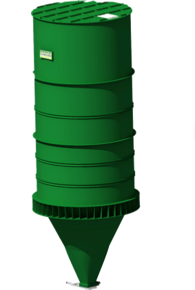
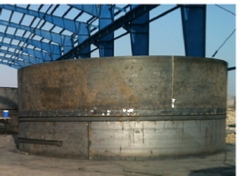

Tel & Fax : +98-21-44036728
Email : INFO@GREENID.IR
GREENID CO
Unit 5, No.5,Sharifi St.,Behnam St.,
Kashani Blvd, Tehran , Iran

©Copyright by GREENID


این شرکت توانايي طراحي ، ساخت ونصب انواع مخازن ذخیره مواد، سیلوی فلزی ( بین های ذخیره مواد ) را در تمامي ابعاد استاندارد جهت صنايع مختلف از جمله سيمان ، فولاد ، صنايع معدني و غيره را دارد
مدل صفحه ای
Mass flow
مدل قیفی
Funnel flow
کوتینگ دیواره ایراد دیگری است که ان هم بر اثر عدم طراحی صحیح به وجود می آید این مشکل معمولاً در مدل قیفی شکل به وجود می آیدو براثر باقی ماندن مواد در زمان طولانی در سیلوی فلزی ذخیره مواد به وجود می آید و جهت رفع این مشکل می بایست در زمانهایی بین ذخیره مواد بصورت کامل تخلیه شود و در صورتی که دوره تخلیه و شارژ مواد زیاد باشد ممکن است این مواد به دیواره چسبیده و باعث ایجاد کوتین روی دیواره سیلوی فلزی شوند
ممکن است جریان نا منظم در سیلو های فلزی ذخیره مواد به وجود آید که در نتیجه ان کنترلی بر قسمت خروجی مواد وجود ندارد و ممکن است مواد بصورت سیل گونه از یبن خارج شوند که گرد و غبار بسیاری به وجود آورده و عملاً امکان تخلیه مواد نیست
در حالت دیگر ممکن است زمان ماندگاری مواد در مدل حرکت قیفی شکل مواد درون بین بسیار پایین باشد و مواد زیادی در ناحیه راکد باقی بماند که ابن موضوع ممکن است کارکرد و کارایی بین را از بین برده و در سیلوهایی که نیاز است مواد در یک زمان معین در بین باقی بماند این امکان حاصل نمی شود
شرکت گرین آیدیی با بررسی و آزمایش مواد مختلف زوایا و شیب مورد نیاز جهت ایجاد مدلهای مختلف حرکتی مواد را بدست اورده و در طراحی بین ها و سیلوهای ذخیره مواد اعمال می نماید و این شرکت با بررسی دقیق نیرو های وارد شده به مخزن ذخیره مواد طراحی بین را از تمامی زوایا مورد بررسی قرار میدهد این شرکت امده ارائه مشاوره ، طراحی ، ساخت و نصب انواع بین ها و سیلوهای فلزی ذخیره مواد می باشد
جدا سازی مواد درون بین یا سیلوی فلزی از دیگر مشکلاتی است که در سیلوها ممکن است به وجود اید بصورتی که ذراتی که در بین موجود است با چگالی و ابعاد مختلف وجود داشته باشد و بر اسر این موضوع و خصوصاً در مدل حرکت قیفی شکل ذرات درشت تر به سمت دیواره حرکت میکنند و ذرات ریزتر در قسمت مرکزی باقی میمانند و این ذرات ریزتر هستند که ابتدا از بین تخلیه می شوند و بعد از انها ذرات درشت تر خارج می شود این مشکل زمانی که نیاز به بسته بندی صحیح و با دانه بندی ریز و درشت داشته باشیم این مشکل بسیار بزرگی جهت بین می باشد که جهت رفع ابن مشکل میبایست از مدل صفحه ای استفاده شود که اثر جدا سازی در آن بسیار ناچیز است
طراحی سیلوی فلزی یا بین های ذخیره مواد به منظور بدست آوردن جریان حرکت مواد درون بین و سیلوی فلزی با قابلیت اطمینان بالا بر اساس خواص مواد محاسبه میشود . از انجایی که طراحی نادرست سیلوی فلزی باعث بروز مشکلات بسیار زیادی ازجمله کاهش کیفیت محصول میشود طراحی و هندسه سیلوی فلزی مواد یا بین ذخیره مواد بر اساس خواص مواد تعیین می شود
هزینه برای آزمایش و طراحی سیلوی فلزی در مقایسه با هزینه ساخت و از دست دادن تولید ، کیفیت بسیار ناچیز است
دو حالت جهت جریان درون سیلوی فلزی ذخیره مواد وجود دارد که عبارتند از جریان صفحه ای و جریان قیفی شکل
مدل جریان صفحه ای در حالتی به وجود میاید که شیب دیواره تند و دیواره قسمت خروجی کاملاً صاف باشد مواد با مدل صفحه ای و از کل دهانه بین ذخیره مواد خارج می شود . مدل جریان قیفی تنها در شرایطی به وجود می آید که شیب از یک میزانی کمتر و صافی سطح از یک حدی بیشتر باشد که در این مدل مواد درون بین بصورت قیفی شکل از قسمت میانی به سمت پایین حرکت می کند و بخشی از مواد روی دیواره و در قسمت هاپر خروجی بصورت راکد باقی می ماند که اصطلاح ناحیه راکد نامیده می شود و این بخش مواد زمانی می تواند تخلیه شود که سیلو بصورت کامل تخلیه شده باشد
در اثر طراحی اشتباه ایراد بروز طاق به وجود اید که در این حالت مواد در قسمت خروجی سیلوی فلزی بصورت یک طاق انباشته شده و امکان خروج مواد وجود ندارد که بر اثر نیرو های چسبندگی بین ذرات و همچنین ابعاد درشت مواد ایجاد می شود که جهت رفع این مشکل میبایست خسمت خروجی بصورت بهینه با توجه سرعت خروج مواد مورد نیاز محاسبه و طراحی شود


 Silo Catalog


Silo Catalog

